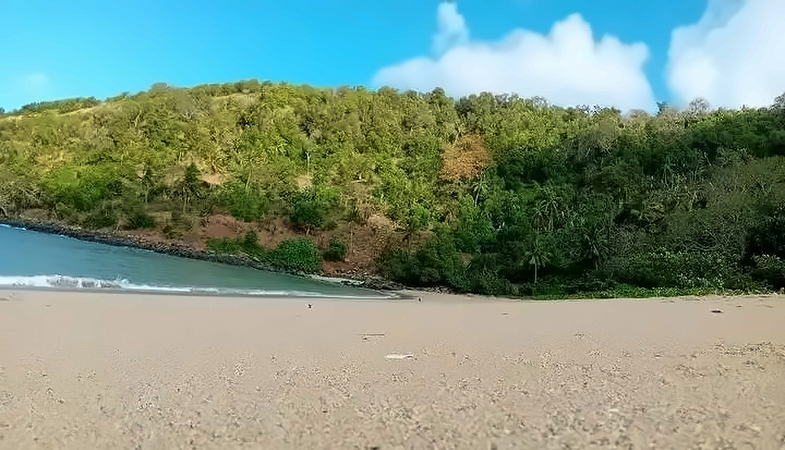

MoheliGoTRAVERSÉES MARITIMES
UNE ENTREPRISE COMORIENNE
OUROVENI · CHINDINI · HOANI · FOMBONI
OUROVENI · CHINDINI · HOANI · FOMBONI
MOHÉLI · GRANDE COMORE
ON A FAIT ÇACHEZ NOUS.
Des commandants d’ici, des ports d’ici.
Et une traversée qui se réserve en ligne.
RÉSERVE TA TRAVERSÉE
TRAVERSÉES MARITIMES DES COMORESmoheligo.com